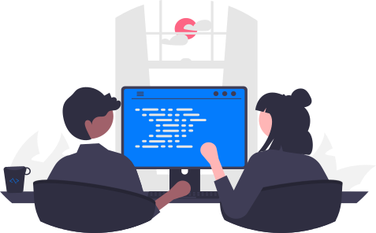

Tout savoir sur le lieu de vos futures études !
De nombreuses résidences étudiantes se situent sûr et à proximité du campus de la Doua. Tout d'abord, de nombreux logements étudiants Crous sont disponibles au centre du Campus.
Pour les étudiants non boursiers, plusieurs résidences étudiantes privées se situent aussi à proximité immédiate du Campus. De plus, le campus étant assez bien desservi par les transports en commun, il est possible de rejoindre facilement des résidences étudiantes plus excentrées.
Si vous avez besoin d’aide pour trouver un logement, le secrétariat de l’IUT peut vous aider afin de vous donner les bons contacts.
Pour commencer, de nombreuses activités sportives sont proposées par le SUAPS de Lyon1 (Service Universitaire des Activités Physiques et Sportives) à des coûts très bas. Ces activités sont proposées en soirée ou le jeudi après-midi (ces derniers étant souvent libres).
Ensuite, le Campus regroupe de nombreuses associations étudiantes et clubs proposant des activités diverses et variées.
Enfin, Lyon 1 propose aussi des événements avec des animations dans les différents départements et bibliothèques universitaires, des spectacles gratuits pour les étudiants ou encore des expositions.
L’IUT Lyon 1 met en place des heures de tutorat entre étudiants pour les personnes volontaires. Ainsi, si vous avez des difficultés, des étudiants d’années supérieures pourront vous aider sur les notions que vous souhaitez travailler.
Si vous avez un handicap, que vous avez besoin d’un tiers temps ou de tout autre aménagement que ce soit, le service mission handicap de l’université Lyon 1 est là pour vous aider et répondre à vos questions.